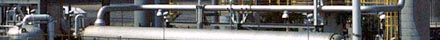
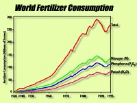
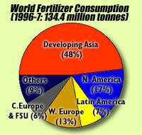
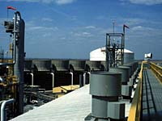

|
|  |
|

World fertilizer consumption has increased substantially over the last 40 years or so. Nitrogen
fertilizer usage has increased the most- 20 fold or more since 1950. Phosphorus and potassium somewhat less.  Who are the main consumers of fertilizers in the world? The largest consumers are the countries with the most people - the developing countries of Asia. South and East Asia accounted for 48% of the world's fertilizer consumption, North and Latin America together for 24%, Europe and the FSU for 19%, the Middle East for 4% and Africa and Oceania for 2% each. Within Canada, over 75% of the total fertilizer use is on the three prairie provinces of Western Canada. Since 1990, fertilizer use in Western Canada has increased at about 6 percent per year.
| |||||||||||||||||||||||||||||||||||||||||||||||
|

Canada is both a major producer and user of fertilizers. Its fertilizer industry has excess capacity so that fertilizers can be exported to the rest of the world. Canada is the largest producer and exporter of potash in the world, accounting for about 38% of the world's production, The value of Canadian nitrogen production, however, is more than that of Canada's potash production. There are six main companies involved in nitrogen fertilizer production in Canada. Most of the plants are located in Alberta, close to inexpensive natural gas supplies. This means that the the average Canadian ammonia production costs are less than half those in the US. A new Saskatchewan company, now in its second year of operation, is making its mark. Saskferco contributes 2.5 per cent of North America's total nitrogen fertilizer production. It markets granular urea and anhydrous ammonia fertilizer to prairie farmers, to eastern Canada and to the northern United States. Agrium is the primary nitrogen producer in Canada, accounting for about 45% of total Canadian capacity.
How much do fertilizers cost? It depends where you live and what time of the year it is. For example, Urea (46% N), a popular nitrogen fertilizer costs about $360 per tonne in W. Central Saskatchewan (Saskatoon) at seeding time (May). In October, the same product costs only $260 per tonne. Monoammoium phosphate (12-51-0) shows similar price variation.
Without today's fertilizer industry - we will not be able to feed the of billions of people on the earth. Fertilizers are totally different from pesticides, insecticides, herbicides and other highly developed chemicals to protect the crop. Unless applied without proper guidance and understanding of soil, fertilizers are not at all harmful for environment. On the contrary, they are essential for protecting the earth's rich crop lands and to get a higher yield from a smaller piece of land. Source of statistics - Web Links |
|||||||||||||||||||||||||||||||||||||||||||||||